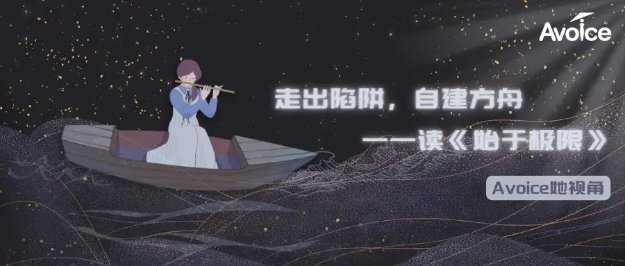
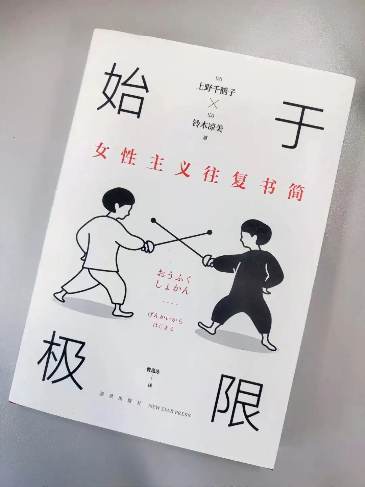
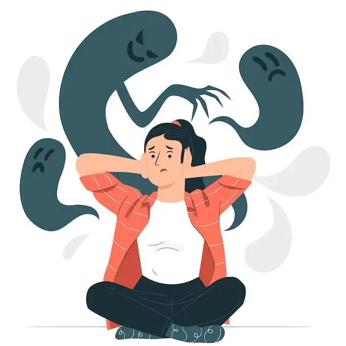
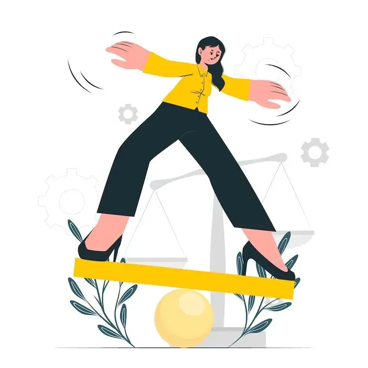
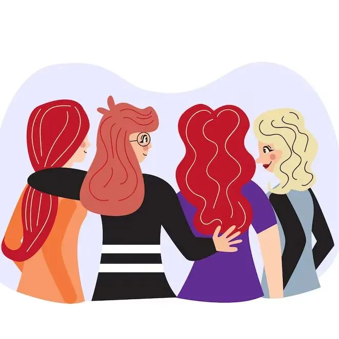

走出陷阱，自建方舟——读《始于极限》

《始于极限：女性主义往复书简》是日本学者上野千鹤子与作家铃木凉美的往来书信集。两位女性从不同的视角出发，围绕恋爱与性、婚姻、工作、独立、自由等话题展开了一场对话。
两位作者，她们通过不断地交锋反思，揭示了性别压迫和社会结构对女性的限制。同时，她们也展示了处于困境中的自己如何通过自我塑造，从而对抗和超越这些限制。每一个女性都有力量改变自己的命运，打破社会的桎梏，走出陷阱，自建方舟。
01
弱势地位却不愿自称受害者的恐弱症
不肯承认自己正在经历伤害，不承认自己是受害者。这种心态，叫做恐弱。 这是上野千鹤子老师在这本书里和铃木凉美就“情色资本”进行讨论时，一针见血提出的概念。

铃木凉美成长于一个富裕的高知家庭，父母是知名的教授和翻译家。她从小学习优秀，还考上了著名的庆应女子大学。在这一面的背后，是她在16岁的时候就背着家里偷偷在风俗店卖原味内衣，大学在歌舞俱乐部做陪酒女；后来更是选择下海，直接去拍了70多部色情片。
凉美的来信是很矛盾的，她一方面说自己因为身处在这个行业，体会到了作为女性的深刻苦楚；另一方面，作为一位受过良好教育的女性，她试图从理论中找到了自己行为的合理性。
“我一度比较认同哈基姆的‘情色资本’概念，认为它有助于女性摆脱受害者身份，有可能成为令我们更加复杂而强大的辅助线。”
在信中，她不仅想方设法合理化自己的选择，而且用精美的学术术语进行包装，用无所谓的冷酷态度来掩饰，她说到“自我决定与自我负责”，辩护说从事这个行业也可以是自我的决定，利用情色资本进行的公平交易和其他市场交易没什么不同。
在回信里，上野老师犀利地批评了这一点：
“在资本的所有者对资本没有控制权的状态下称其为‘资本’显然是错误的。资本主义从根本上与私有权挂钩， 而情色资本的归属者（即女性）是否拥有其所有权都是存疑的人。”
情色资本的概念让笔者想到了一些器官贩卖的问题，有人说，一个愿意买，一个愿意卖，公平的市场交易有哪点不好呢？这种说辞也让人联想到像一些为“情色资本”辩护的人们，如出一辙地为自己的“恐弱”反驳，不过，贩卖器官剥削的是穷人，通常情色资本剥削的是女人。
这种“恐弱”来自不愿意承认自己弱势地位的精英女性，当坚持自我选择的主体性的时候，就好像能够摆脱受害者的身份，连同身上背负的社会枷锁一起丢掉，好像这样性交易带给自己的伤害就不曾发生，这是一种消极的应对态度。
诚如上野老师所说，主体作为个体越是坚持“自我决定”，结构就越能被免责。显然，这种“恐弱”带来的长期效果是不利于发展的。
“在结构上处于劣势的人确实有可能在短期内反过来利用其劣势从结构中获利，但长远来看，这将导致结构的再生产。”
02
让部分女性远离女性主义的“自我决定”
上野千鹤子曾在文中提到，性工作对女性而言是一种经济活动。男性消费者深知此行为实际上并不能通过金钱来衡量，于是他们将这种心理压力转移给了交易的另一方——女性。
男性最常见也最有力的辩护无非是“自我决定” 。
在一些叙事中，性工作者的讲述概念颇具职业色彩。换句话说，那是带有商品属性的讲述。强调女性具有能动性、自愿选择成为性客体。这是性产业的陈词滥调，因为女性的能动性可以为男性的性欲免责。
然而，这些讲述不能代表所有的性工作者。这使得“自我决定”的概念在某种程度上就显得有些扭曲和误导，因为这个选择其实并非所有人都能拥有。叙述的部分女性拥有更多的选择权甚至可以选择离开，但没有其他选择而被迫从事性工作的女性无法从夜班的世界抽身。在这里，“自我决定”看似赋予了女性选择的权力，但也可能被男性用来剥削和为自己的行为辩护，从而掩盖了女性在性工作中面临的实际困境和不平等。
主体作为个体越是坚持“自我决定”，结构就越能被免责。在结构上处于劣势的人确实有可能在短期内反过来利用其劣势从结构中获利，但长远来看，这将导致结构的再生产。
当我们越是强调个体的自由、自主性以及对自身生活的决定权，以社会性别结构和等级制度等为基础的责任可能会相对减弱。更严重的情况下这可能被视为一种免责方式，即允许结构性的不平等持续存在，同时却将责任完全归咎于个人。即使有些弱势群体会利用他们的社会角色来获取关注，但忽视长期的社会结构变化，可能会无意中再次强化和再生产现有的不平等结构。

这种“自我决定”不仅存在于性工作中，也存在于生活的方方面面。
“自我决定”这一本该是女性主义的骄傲和武器，却成为了一种狡猾的解释，一种以“自愿”为名的剥削和压迫。这也让许多女性错过了“拥抱”女权主义的机会。因为在她们看来，她们是有选择的，她们的处境是自我决定的结果，与社会结构的压迫并无关系。在职场环境中，女性可能会选择接受较低的薪酬和较少的职业发展机会，以换取更多的家庭时间和照顾家人的机会。这种选择是由她们自己做出的，看似是“自我决定”的体现。
然而，这种选择的背后，实际上是被社会性别刻板印象和性别分工的压力所驱使的， 这就使得职场性别不平等的结构得以维持和再生产。对此详细介绍，在下一部分将详细阐述。
03
兼顾家庭与事业的力不从心
女性陷入追求在事业上的追求与家庭责任之间陷入两难的困境：面对职场的竞争压力，女性她们不得不付出更多的努力来证明自己的能力，以求得与男性同等的地位和机会；然而，同时她们同时也承担着照顾家庭和孩子的传统责任。这种双重角色的扮演使得女性往往不得不做出牺牲，这也导致她们在职业发展和家庭幸福之间难以取得平衡。
书中揭示了社会结构和性别观念对女性的消极影响。长期以来，社会普遍认为女性应该以家庭为重，将照顾家庭和孩子作为主要责任，而对于事业的追求则不以为然。铃木凉美女士提出她的发现：“在社会整体结构中，地位相当优越的女性竟如此渴望家庭，这让我感受到来源于工作的独立有其局限性。即使看起来足够独立，能通过工作树立自信，在经济上很是宽裕，能切实感觉到社会的认可，还是有人无法坚定地当一个单身贵族。而周围的人能为他们提供的立竿见影的解决方法，除了找到以结婚为前提的伴侣，就是培养装神弄鬼的爱好或饲养宠物。说实话，因为完全不知道还有什么能让她们不再渴望婚姻带来的安全感......”除了婚姻，女性缺乏太多保障。
传统观念导致女性在职场中遭遇到性别歧视和职业瓶颈，使得她们在事业发展上面临更大的挑战。同时，这些观念也在一定程度上影响了女性自身的价值观和追求，使得她们更容易对自己的能力产生怀疑和自我设限。
铃木凉美问上野千鹤子：当您以女性身份进入男性主导的职场，并取得女性从未有过的成绩时，您会不会觉得男性因为“这是女人写的东西”、“女性学者写了性感女孩”而兴奋？我们在滔滔不绝地阐述自己的看法时，却会因人们的关注点错位而被消费。即使女孩的工作再成功，也只会被男性凝视着丰满的胸部，这样的恶趣味同样源于固化的性别认知。
书中透露出的问题在现代社会普遍存在。推动社会的性别平等意识和政策变革无疑是重要的，只有改变社会大众认知，女性在职场和家庭中的双重角色才能得到充分理解和尊重。这本书引发了人们对性别平等和家庭价值观的思考。
04
结尾
女性仍然有很长的路要走。
得益于过去几十年来的女性主义运动，当今女性在面临性别歧视时已经拥有了一定的警觉。然而，性别不平等并非仅仅表现为明显的歧视和压迫。它深深地根植于我们的社会结构、文化传统，甚至我们的语言和思考方式中。这些隐蔽的性别不平等更加难以察觉。
这本书的精髓正在于此： 女性主义不是告诉我们，“你可以选择不成为受害者”，而是要我们明白，“你本不应该成为受害者”。
前者把责任推给了个体，让她们觉得只要努力规避问题，就能避免成为受害者。这样的观念最终可能成为一把利刃，把责任和压力都戳向了女性自己，使得她们在面对性别不平等时只能独自奋斗，无法得到社会的支持和理解。然而后者揭露了更为残酷的事实：每个人都逃不了父权社会的压迫。

我们应该站在其他女性的角度去看世界，理解她们的痛苦和挣扎，共同寻找出路和解决方案。女性应该要有共情，有团结，有行动。
撰稿｜汤欣然 陈子涵 范珊玛
审校｜Dolcia 秦科
排版、封面｜罗菲
图片 | freepik